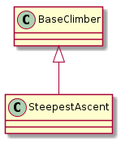
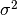

Steepest Ascent Hill-Climbing With Replacement makes the search more aggresive than a regular hill-climber by sampling multiple times around the current candidate solution [EOM].
For examples:

BaseClimber |
SteepestAscent |
|
SteepestAscent.__call__ |
|
SteepestAscent.reset |
This optimizer only has one real parameter to tune (local_searches) which decides how much it looks around each candidate. If this is small it will act more like a regular hill-climber (so the data has to have more information than noise) but if it is large it will be less likely to go off in the wrong direction. The Tweak used is what’s responsible for most of the exploration this does. With GaussianConvolution, changing  to something larger will cause it to jump more often. If both the number of local searches and the spread are large, you end up with evolutionary pressure where there will be high mutation but the aggressive local searching will tend to weed out the bad variants.